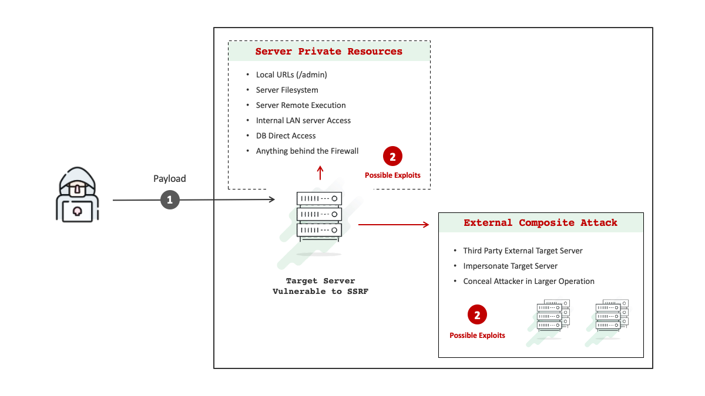
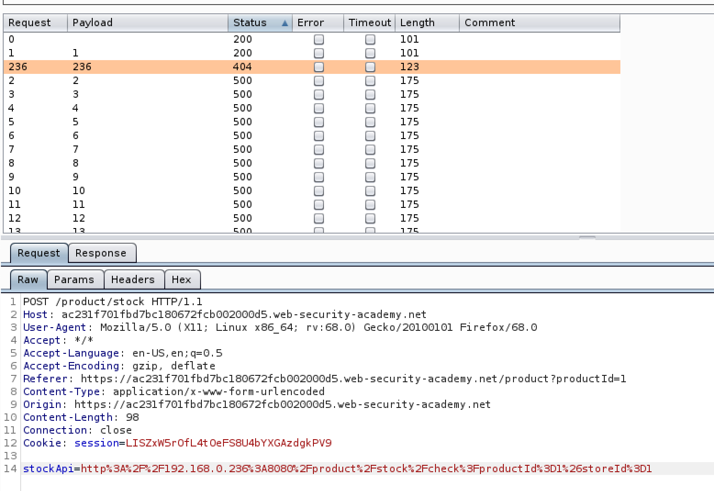

sSRF:
Server site request forgery
Server-side request forgery (also known as SSRF) is a web security vulnerability that allows an attacker to induce the server-side application to make requests to an unintended location.

In a typical SSRF attack, the attacker might cause the server to make a connection to internal-only services within the organization's infrastructure. In other cases, they may be able to force the server to connect to arbitrary external systems, potentially leaking sensitive data such as authorization credentials. A successful SSRF attack can often result in unauthorized actions or access to data within the organization, either in the vulnerable application itself or on other back-end systems that the application can communicate with. In some situations, the SSRF vulnerability might allow an attacker to perform arbitrary command execution. An SSRF exploit that causes connections to external third-party systems might result in malicious onward attacks that appear to originate from the organization hosting the vulnerable application. SSRF attacks often exploit trust relationships to escalate an attack from the vulnerable application and perform unauthorized actions. These trust relationships might exist in relation to the server itself, or in relation to other back-end systems within the same organization.
SSRF arises due to:
- The access control check might be implemented in a different component that sits in front of the application server. When a connection is made back to the server itself, the check is bypassed.
- For disaster recovery purposes, the application might allow administrative access without logging in, to any user coming from the local machine. This provides a way for an administrator to recover the system in the event they lose their credentials. The assumption here is that only a fully trusted user would be coming directly from the server itself.
- The administrative interface might be listening on a different port number than the main application, and so might not be reachable directly by users.
SSRF attacks against other back-end systems
Another type of trust relationship that often arises with server-side request forgery is where the application server is able to interact with other back-end systems that are not directly reachable by users. These systems often have non-routable private IP addresses. Since the back-end systems are normally protected by the network topology, they often have a weaker security posture. In many cases, internal back-end systems contain sensitive functionality that can be accessed without authentication by anyone who is able to interact with the systems. In the preceding example, suppose there is an administrative interface at the back-end URL https://192.168.0.68/admin. Here, an attacker can exploit the SSRF vulnerability to access the administrative interface. 
Bypassing SSRF filters via open redirection
It is sometimes possible to circumvent any kind of filter-based defenses by exploiting an open redirection vulnerability. In the preceding SSRF example, suppose the user-submitted URL is strictly validated to prevent malicious exploitation of the SSRF behavior. However, the application whose URLs are allowed contains an open redirection vulnerability. Provided the API used to make the back-end HTTP request supports redirections, you can construct a URL that satisfies the filter and results in a redirected request to the desired back-end target.This SSRF exploit works because the application first validates that the supplied stockAPI URL is on an allowed domain, which it is. The application then requests the supplied URL, which triggers the open redirection. It follows the redirection, and makes a request to the internal URL of the attacker's choosing.
